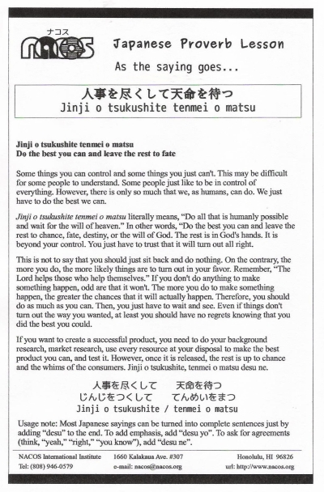

Jinji o tsukushite tenmei o matsu
Do the best you can and leave the rest to fate
Some things you can control and some things you just can't. This may be difficult for some people to understand. Some people just like to be in control of everything. However, there is only so much that we, as humans, can do. We just have to do the best we can.
Jinji o tsukushite tenmei o matsu literally means, “Do all that is humanly possible and wait for the will of heaven.” In other words, “Do the best you can and leave the rest to chance, fate, destiny, or the will of God. The rest is in God's hands. It is beyond your control. You just have to trust that it will turn out all right.
This is not to say that you should just sit back and do nothing. On the contrary, the more you do, the more likely things are to turn out in your favor. Remember, “The Lord helps those who help themselves.” If you don't do anything to make something happen, odd are that it won't. The more you do to make something happen, the greater the chances that it will actually happen. Therefore, you should do as much as you can. Then, you just have to wait and see. Even if things don't turn out the way you wanted, at least you should have no regrets knowing that you did the best you could.
If you want to create a successful product, you need to do your background research, market research, use every resource at your disposal to make the best product you can, and test it. However, once it is released, the rest is up to chance and the whims of the consumers. Jinji o tsukushite, tenmei o matsu desu ne.
Usage note: Most Japanese sayings can be turned into complete sentences just by adding “desu” to the end. To add emphasis, add “desu yo”. To ask for agreements (think, “yeah,” “right,” “you know”), add “desu ne”.

| © 1995-2013 NACOS International Institute. All Rights Reserved. |